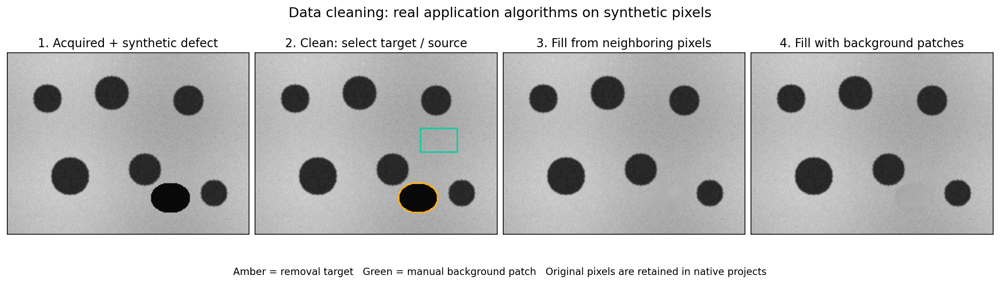

Data cleaning: remove, fill and restore#
Use cleaning to remove contamination or unwanted regions from derived pixels. The acquired image is retained. Native projects store cleaning records so you can undo, restore a region, or remove one record later. Cleaning changes image intensities; deleting an ordinary annotation only removes geometry.


Computed with the application’s real neighbor/patch algorithms on synthetic data. The same intensity scale is used in every panel. These are illustrative fills, not recovered observations of an unknown specimen.
1. File and Group: prepare the image#
Open the image through File → Open images…. Keep a writable native project folder. Inspect the original image before editing and keep original/processed exports distinct. If accepted masks already identify the unwanted material, you can select those area objects instead of redrawing the target.
For patch filling, create a group containing only manually marked clean background regions. Choose several patches with appropriate texture, avoiding particles, gradients or damaged pixels that should not be copied.
2. Mode and drawing tools: define what to remove#
Choose Mode → Clean. Rectangle is initially selected; Polygon, Circle and Ellipse also define area targets. Point / cleaning brush becomes a brush in this mode. Set its radius through Cleaning → Cleaning brush radius…; this is unrelated to SAM’s point prompt size.
For a complement target, select area objects then choose Edit → Invert region. The resulting exact region includes all pixels outside the selected masks. Inspect it carefully before removing a large area.

5. Background group: configure real patch sources#
In Manual mode, draw clean background areas and put them in one Group.
Choose Cleaning → Choose background group…. Any group name is allowed; the source association is explicit, not inferred from the word “Background”.
Add selection to background group… adds eligible manual area annotations.
Return to Clean, remove a target, then choose Fill with background patches.
Use Clear background group selection if those sources are no longer valid.
For ellipse/polygon patches, only pixels inside the true mask are sources; the app does not borrow arbitrary pixels outside their boundary. Patches intersecting already modified pixels are rejected. A patch source must not overlap the target.
6. Objects and restoration: inspect the editing history#
Cleaning records appear in Objects. Show cleaning regions toggles their outlines without deleting edits. The View / infer from processed image checkbox chooses derived pixels when present; turning it off compares the retained acquired source. It starts off for newly opened/reopened images; each image remembers its own session choice. Toggling does not erase processing. An explicit processing Apply may select the processed view to show its result. Forget processed image… separately clears cleaning/processing records and retained crops after confirmation, while keeping annotations/current orientation; Undo recovers the previous state. Display brightness/contrast is separate from pixel edits.
Cleaning → Restore selected area / all edits restores the requested pixels.
Deleting a cleaning record restores its footprint and replays retained edits.
Undo / Redo traverses committed history.
If a later denoising record exists, removing one cleaning record does not mean all subsequent processing is discarded. Check the complete history and processed view before exporting.
7. Save reproducible results#
Use File → Save project now for full editable .sam.json recovery. Use
Save original / processed images… for TIFF pixel output and keep both
versions when scientific interpretation depends on the acquired data.
A flat TIFF does not preserve the reversible edit history. See
saving and the Cleaning menu reference.